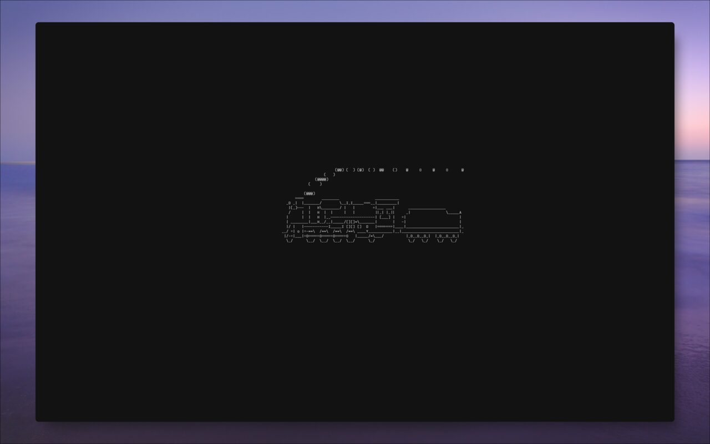

The config for my computer. Everything lives in one repo.

Arch Linux
| What |
Using |
| Compositor |
mango (Wayland) |
| Desktop readout |
conky, no bar |
| Terminal |
kitty |
| Shell |
fish |
| Editor |
micro |
| Launcher |
fuzzel |
| Notifications |
dunst |
| Lock |
swaylock |
| Files |
yazi |
| PDFs |
zathura |
| Video |
mpv |
| System monitor |
btop |
| Theme |
onedark, applied to everything by coat |
Scripts in ~/.local/bin: osd (volume, brightness and media keys), battery-watch, idle-guard, audio-ensure, theme-random, theme-pick, screenshot, screenshot-edit, pickcolor, layout.
Package lists are in linux/packages/: 170 from the official repos, 26 from the AUR.
git clone https://github.com/jeebuscrossaint/dotfiles ~/dotfiles
~/dotfiles/install.fish
This links everything into ~, installs missing packages, and applies the theme. Add --dry-run to see what it would change first, or --minecraft to also set up a 1.8.9 PvP instance in PrismLauncher.